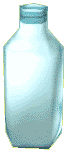

|
 Before the scientist Pasteur discovered how to kill the bacteria present in milk by heating it, farmers had no way of preserving their cows' milk. That's why they made all sorts of cheese. In France, there are almost 500 different kinds of cheese! Cream is the fat in milk. It is separated from the milk by spinning it very quickly in a large machine. Butter is made from cream that is beaten very hard with a giant whisk. We then obtain two products: a liquid, called buttermilk, and a solid which is butter.  Cheese can be made from cow's milk, but also from sheep's and goat's milk.
The cheese-making method is very complicated because, the differences between French cheeses depend from the peculiarities of the process itself and from the type of milk used.
The milk is first heated and then curdled; that means that it's made thicker.
Then the curdled milk is cut with a grid to make pieces no bigger than a grain of rice.
This dough is poured into a mold with a cloth at the bottom, so that the dough will drain.
The liquid that drips is whey. The cheese is then pressed into a mold that gives it its shape.
Finally, the cheese is stored in a cellar and turned over very often. In the cellar, the cheese Cheese can be made from cow's milk, but also from sheep's and goat's milk.
The cheese-making method is very complicated because, the differences between French cheeses depend from the peculiarities of the process itself and from the type of milk used.
The milk is first heated and then curdled; that means that it's made thicker.
Then the curdled milk is cut with a grid to make pieces no bigger than a grain of rice.
This dough is poured into a mold with a cloth at the bottom, so that the dough will drain.
The liquid that drips is whey. The cheese is then pressed into a mold that gives it its shape.
Finally, the cheese is stored in a cellar and turned over very often. In the cellar, the cheese  matures and takes on all its flavor. After a few months, it will be ready to eat !
matures and takes on all its flavor. After a few months, it will be ready to eat ! |
| You can check if you understood these informations correctly !
Click here to play ! |
Would you rather discover a fun recipe? ? Click here ! |